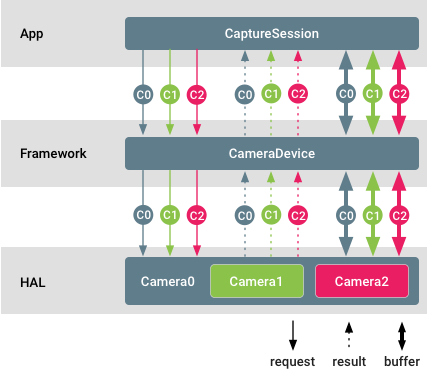

Android 9 introduces API support for multi-camera devices via a new logical camera device composed of two or more physical camera devices pointing in the same direction. The logical camera device is exposed as a single CameraDevice/CaptureSession to an application allowing for interaction with HAL-integrated multi-camera features. Applications can optionally access and control underlying physical camera streams, metadata, and controls.

Figure 1. Multi-camera support
In this diagram, different camera IDs are color coded. The application can stream raw buffers from each physical camera at the same time. It is also possible to set separate controls and receive separate metadata from different physical cameras.
Examples and sources
Multi-camera devices must be advertised via the logical multi-camera capability.
Camera clients can query the camera ID of the physical devices a particular
logical camera is made of by calling
getPhysicalCameraIds().
The IDs returned as part of the result are then used to control physical devices
individually via
setPhysicalCameraId().
The results from such individual requests can be queried from the complete
result by invoking
getPhysicalCameraResults().
Individual physical camera requests may support only a limited subset of
parameters. To receive a list of the supported parameters, developers can call
getAvailablePhysicalCameraRequestKeys().
Physical camera streams are supported only for non-reprocessing requests and only for monochrome and bayer sensors.
Implementation
Support checklist
To add logical multi-camera devices on the HAL side:
- Add a
ANDROID_REQUEST_AVAILABLE_CAPABILITIES_LOGICAL_MULTI_CAMERAcapability for any logical camera device backed by two or more physical cameras that are also exposed to an application. - Populate the static
ANDROID_LOGICAL_MULTI_CAMERA_PHYSICAL_IDSmetadata field with a list of physical camera IDs. - Populate the depth-related static metadata required to correlate between
physical camera streams' pixels:
ANDROID_LENS_POSE_ROTATION,ANDROID_LENS_POSE_TRANSLATION,ANDROID_LENS_INTRINSIC_CALIBRATION,ANDROID_LENS_DISTORTION,ANDROID_LENS_POSE_REFERENCE. Set the static
ANDROID_LOGICAL_MULTI_CAMERA_SENSOR_SYNC_TYPEmetadata field to:ANDROID_LOGICAL_MULTI_CAMERA_SENSOR_SYNC_TYPE_APPROXIMATE: For sensors in master-master mode, no hardware shutter/exposure sync.ANDROID_LOGICAL_MULTI_CAMERA_SENSOR_SYNC_TYPE_CALIBRATED: For sensors in master-slave mode, hardware shutter/exposure sync.
Populate
ANDROID_REQUEST_AVAILABLE_PHYSICAL_CAMERA_REQUEST_KEYSwith a list of supported parameters for individual physical cameras. The list can be empty if the logical device doesn't support individual requests.If individual requests are supported, process and apply the individual
physicalCameraSettingsthat can arrive as part of capture requests and append the individualphysicalCameraMetadataaccordingly.For Camera HAL device versions 3.5 (introduced in Android 10) or higher, populate the
ANDROID_LOGICAL_MULTI_CAMERA_ACTIVE_PHYSICAL_IDresult key using the ID of the current active physical camera backing the logical camera.
For devices running Android 9, camera devices must support replacing one logical YUV/RAW stream with physical streams of the same size (doesn't apply to RAW streams) and the same format from two physical cameras. This doesn't apply to devices running Android 10.
For devices running Android 10 where the
camera HAL device version is
3.5
or higher, the camera device must support
isStreamCombinationSupported
for applications to query whether a particular stream combination containing
physical streams is supported.
Stream configuration map
For a logical camera, the mandatory stream combinations for the camera device of
a certain hardware level is the same as what's required in
CameraDevice.createCaptureSession.
All of the streams in the stream configuration map must be logical streams.
For a logical camera device supporting RAW capability with physical sub-cameras of different sizes, if an application configures a logical RAW stream, the logical camera device must not switch to physical sub-cameras with different sensor sizes. This ensures that existing RAW capture applications don't break.
To take advantage of HAL-implemented optical zoom by switching between physical sub-cameras during RAW capture, applications must configure physical sub-camera streams instead of a logical RAW stream.
Guaranteed stream combination
Both the logical camera and its underlying physical cameras must guarantee the mandatory stream combinations required for their device levels.
A logical camera device should operate in the same way as a physical camera device based on its hardware level and capabilities. It's recommended that its feature set is a superset of that of individual physical cameras.
On devices running Android 9, for each guaranteed stream combination, the logical camera must support:
Replacing one logical YUV_420_888 or raw stream with two physical streams of the same size and format, each from a separate physical camera, given that the size and format are supported by the physical cameras.
Adding two raw streams, one from each physical camera, if the logical camera doesn't advertise RAW capability, but the underlying physical cameras do. This usually occurs when the physical cameras have different sensor sizes.
Using physical streams in place of a logical stream of the same size and format. This must not slow down the frame rate of the capture when the minimum frame duration of the physical and logical streams are the same.
Performance and power considerations
Performance:
- Configuring and streaming physical streams may slow down the logical camera's capture rate due to resource constraints.
- Applying physical camera settings may slow down the capture rate if the underlying cameras are put into different frame rates.
Power:
- HAL's power optimization continues to work in the default case.
- Configuring or requesting physical streams may override HAL's internal power optimization and incur more power use.
Customization
You can customize your device implementation in the following ways.
- The fused output of the logical camera device depends entirely on the HAL implementation. The decision on how fused logical streams are derived from the physical cameras is transparent to the application and Android camera framework.
- Individual physical requests and results can be optionally supported. The set of available parameters in such requests is also entirely dependent on the specific HAL implementation.
- From Android 10, the HAL can reduce the number of
cameras that can be directly opened by an application by electing not to
advertise some or all PHYSICAL_IDs in
getCameraIdList. CallinggetPhysicalCameraCharacteristicsmust then return the characteristics of the physical camera.
Validation
Logical multi-camera devices must pass Camera CTS like any other regular camera.
The test cases that target this type of device can be found in the
LogicalCameraDeviceTest
module.
These three ITS tests target multi-camera systems to facilitate the proper fusing of images:
scene1/test_multi_camera_match.pyscene4/test_multi_camera_alignment.pysensor_fusion/test_multi_camera_frame_sync.py
The scene1 and scene4 tests run with the
ITS-in-a-box test
rig. The test_multi_camera_match test asserts that the brightness of the
center of the images match when the two cameras are both enabled. The
test_multi_camera_alignment test asserts that camera spacings, orientations,
and distortion parameters are properly loaded. If the multi-camera system
includes a Wide FoV camera (>90o), the rev2 version of the ITS box is required.
Sensor_fusion is a second test rig that enables repeated, prescribed phone
motion and asserts that the gyroscope and image sensor timestamps match and that
the multi-camera frames are in sync.
All boxes are available through AcuSpec, Inc. (www.acuspecinc.com, fred@acuspecinc.com) and MYWAY Manufacturing (www.myway.tw, sales@myway.tw). Additionally, the rev1 ITS box can be purchased through West-Mark (www.west-mark.com, dgoodman@west-mark.com).